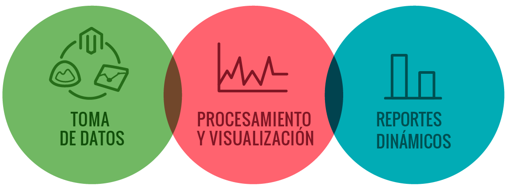
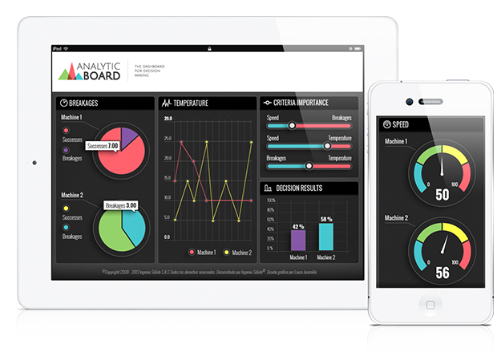
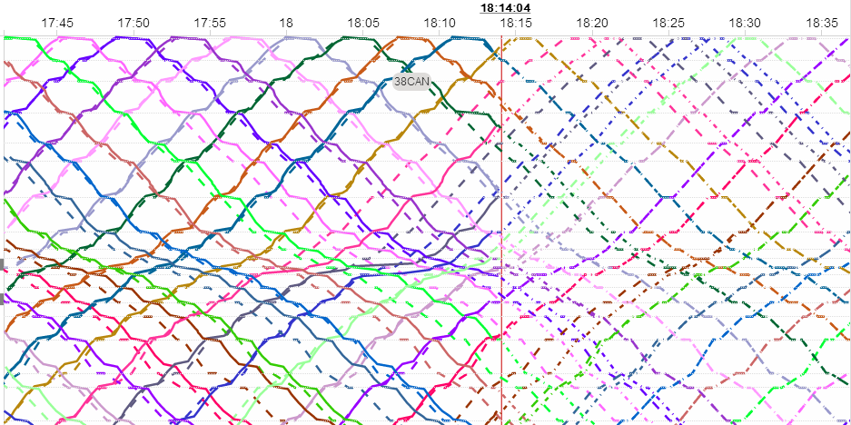
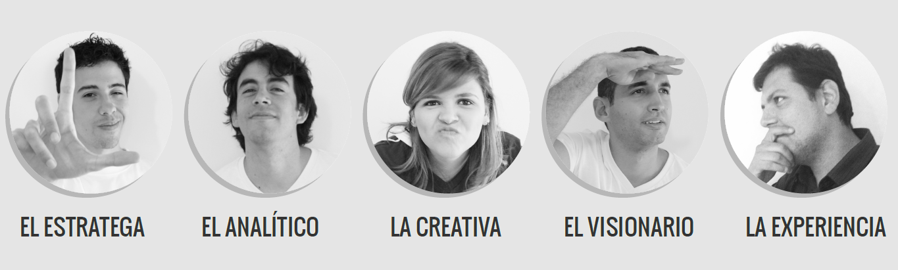

<!DOCTYPE html><html><head><meta charset="utf-8"><meta name="viewport" content="width=device-width, initial-scale=1, maximum-scale=1"><title>Analytic Board</title><link rel="stylesheet" type="text/css" href="bower_components/prism/themes/prism-tomorrow.css"><link rel="stylesheet" type="text/css" href="styles/main.css"></head></html><body><article><section class="gray"><h1>Diseño de Visualizaciones de Datos</h1><div></div><div class="bt-right"></div></section><section class="green"><h1>¿ Qué es la Visualización de Datos?</h1><h2>Se refiere a la creación de representaciones visuales como gráficas interactivas (diagramas de barras, tortas, líneas de tiempo, treemaps, etc.) que faciliten el análisis y la compresión de datos.</h2></section><section class="white"><h3>Ejemplo de Visualización de Datos</h3><iframe src="demos/radar-innovation/index.html" scrolling="no" height="100%" width="100%" style="border:0px"></iframe></section><section class="green"><h1>¿Cómo hacer visualizaciones que le encanten a los clientes?</h1></section><section class="blue"><h1>Tener muy claro el objetivo de la visualización</h1><h2>¿Qué preguntas quiero resolver? ¿Qué busco transmistir?</h2></section><section class="yougotit"><div class="tint"><h1>Juega con los datos hasta que de verdad los entedas</h1></div></section><section class="blue"><h1>Escoge la gráfica correcta para cada tipo de dato</h1><h2>Te vas a equivocar (No te preocupes)</h2></section><section class="white"><h2>Haz tu Prototipo en Papel (Explicalo)</h2><div></div></section><section class="hellno"><div class="tint"><h1>No hagas Diseño Gráfico</h1><h2>Mejor haz un moodboard</h2></div></section><section class="shutup"><div class="tint"><h1>Haz un Prototipo Interactivo</h1><h2>(Cállate y Escucha)</h2></div></section><section class="blue"><h1>Valida con tantas personas como puedas</h1><h2>Refina</h2></section><section class="red"><h1>¿Qué no debes hacer?</h1></section><section class="cake"><div class="tint"><h1>No abuses de las tortas</h1></div></section><section class="weak"><div class="tint"><h1>Si necesitas muchas etiquetas</h1><h2>Tu visualización es débil</h2></div></section><section class="blue"><h1>El<span class="big-text"> 90%</span> de la información se ha creado en los<span class="big-text"> 2</span> últimos años</h1><h4>(Zikopoulos, Eaton, DeRoos, Deutsch, & Lapis, 2012)</h4></section><section class="green"><h1>Para que la información sea útil debe ser:</h1><h2>Organizada, Integrada, De alta calidad, Fácil de entender y Presentada a tiempo.</h2><h3>(March & Hevner, 2007, p. 1032)</h3></section><section class="white"><h1>La solución</h1></section><section class="gray"><h1>Analytic Board</h1></section><section class="red"><h1>Nuestra Propuesta de Valor</h1><h2 class="font-yellow">Le Damos Vida al Conocimiento de Nuestros Clientes</h2><h2>&nbsp;</h2><h2>Mejoramos el resultado de los trabajos de consultoría, investigación, supervisión, educación y periodismo, volvíendolos más atractivos y útiles para sus clientes, a tráves del uso de gráficas interactivas y dashboards dinámicos</h2></section><section class="blue"><h1>Nuestro Portafolio</h1></section><section class="white"><h2>Visor Dinámico de Resultados</h2><iframe src="http://162.243.225.191:5000/login" scrolling="yes" height="100%" width="100%" style="border:0px"></iframe></section><section class="white"><h2>Supervisión de Transporte en Tiempo Real</h2></section><section class="white"><iframe src="demos/metro-reports/index.html" scrolling="yes" height="100%" width="100%" style="border:0px"></iframe></section><section class="aliceblue"><iframe src="demos/risk-america/index.html" scrolling="yes" height="100%" width="100%" style="border:0px"></iframe></section><section class="white"><h2>Patrones de Crecimiento de los Niños</h2><iframe src="demos/growth-charts/index.html" scrolling="no" height="100%" width="100%" style="border:0px"></iframe></section><section class="white"><h2>Ideologías, Desigualdad y PIB en América Latina</h2><iframe src="demos/gni-pib/index.html" scrolling="yes" height="100%" width="100%" style="border:0px"></iframe></section><section class="white"><h2>Mapa de Riesgos de Software</h2><iframe src="demos/risk-treemap/index.html" scrolling="no" height="100%" width="100%" style="border:0px"></iframe></section><section class="white"><h2>Selección de Software</h2><iframe src="demos/par-coord-tech-select/index.html" scrolling="no" height="100%" width="100%" style="border:0px"></iframe></section><section class="white"><h2>Nuestras Ventas</h2><iframe src="demos/ventas/ventas.html" scrolling="no" height="100%" width="100%" style="border:0px"></iframe></section><section class="gray"><div><h1>Nuestro Equipo</h1></div></section><section class="life"><div class="tint"><h2>Analytic Board</h2><h1>Dele Vida a su Conocimiento</h1><h2>Gracias por su atención</h2></div></section></article><script src="bower_components/bespoke.js/dist/bespoke.min.js"></script><script src="bower_components/bespoke-bullets/dist/bespoke-bullets.min.js"></script><script src="bower_components/bespoke-scale/dist/bespoke-scale.min.js"></script><script src="bower_components/bespoke-hash/dist/bespoke-hash.min.js"></script><script src="bower_components/bespoke-progress/dist/bespoke-progress.min.js"></script><script src="bower_components/bespoke-state/dist/bespoke-state.min.js"></script><script src="bower_components/bespoke-forms/dist/bespoke-forms.min.js"></script><script src="bower_components/prism/prism.js"></script><script src="scripts/main.js"></script></body>